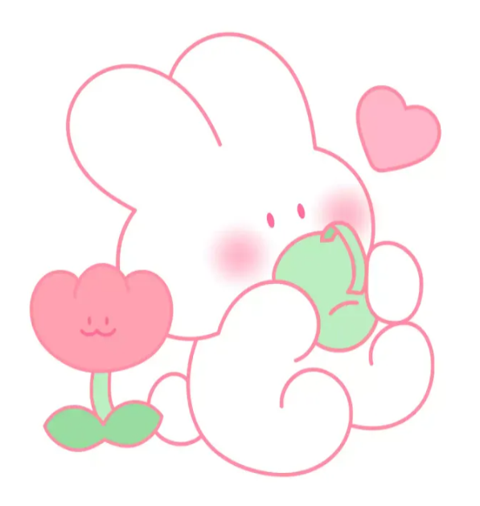

이번에는 내가 생각하는 디자인에 대해서 이야기 해볼 것이다.

일단 디자인에 대한 내 생각을 키워드로 먼저 분류해보았다.
이렇게 키워드를 둔 이유는 디자인이라는 것은 전체적으로 본인의 머릿속에서
상상하고 만들어서 자기가 원하는대로 할 수 있기 때문에 그렇게 두었다.
첫번째, 창작이라고 키워드를 둔 이유는 디자인은 자신만의 멋진 무언가를 만들 수 있고, 자신을 표현할 수 있기 때문이라 생각했다.
두번째, 상상력이라고 키워드를 둔 이유는 디자인을 만들 때에는 꼭 자기 자신의 상상을 집어넣고 만들기 때문이다.
마지막으로, 꿈이라고 키워드를 둔 이유는 디자인을 할 때 자신의 꿈을 펼치는 것과 같다고 나는 생각하였기 때문이다.
나는 이와 같이 디자인에 대해 이렇게 생각하였다.
물론 꼭 디자인이 이렇다라는 주장은 할 순 없지만 생각해보면 맞는 말이라고 생각한다.
그럼 이상으로 마치도록 하겠습니다.
메롱